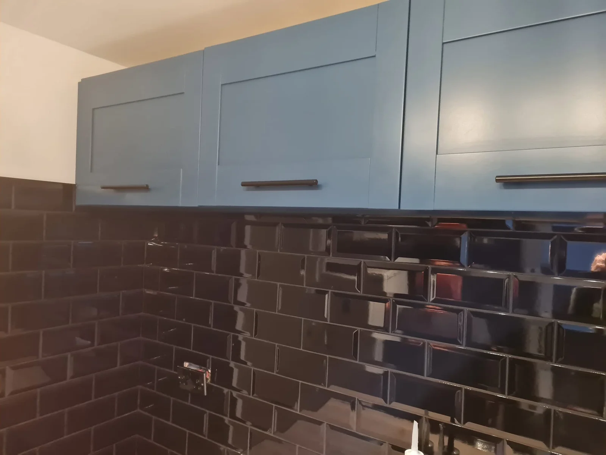

Kitchen & Cupboard Respraying
A different finish for existing kitchen cabinets and cupboards, with suitability checked before work is agreed.
Discuss your cupboards →
Refresh the finish
Keep the cupboards.
Change the look.
If the existing cupboards are suitable, respraying offers a way to change the finish. Share the material, condition and colour you have in mind so we can discuss the preparation involved.
- Kitchen cabinet and cupboard spraying
- Colour and finish choices discussed for your project
- Surface condition and suitability assessed
Respraying or refurbishment?
Respraying changes the finish of existing cabinetry. A wider kitchen refurbishment may involve installation, tiling, plumbing or joinery. If you are unsure, describe the result you want and we will discuss which service fits.
Explore kitchen refurbishment →Not just kitchen cupboards?
Ask about other cupboard or cabinet work. Send details of the material and item so the scope can be confirmed; suitability is not assumed.
Useful to know
Before you enquire.
Can every cupboard be sprayed?
No. Material and condition need to be considered. Tell us about any peeling finish, damage or previous coatings.
Are doors removed or sprayed on site?
The process, including any removal of components, is discussed for the particular project.
Can I request a full kitchen refurbishment instead?
Yes. Kitchen refurbishment and installation are separate services. Tell us whether you want a new finish or a wider change to the kitchen.